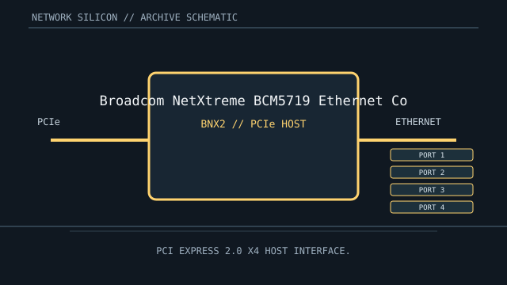

[ MODEL-SPECIFIC NETWORK HARDWARE ]
Broadcom NetXtreme BCM5719 Ethernet Controller
Four-port 10/100/1000BASE-T PCIe controller used in server NICs and embedded boards. This is a controller/chip record; finished-card details are implementation-specific.

IDENTIFICATION: Match complete component top-mark, stepping and board revision. Nominal signaling rates are not measurements of application throughput.
Exact specifications and compatibility
| Dedicated subcategory | Ethernet controllers and PHYs |
|---|---|
| Exact controller identity | Broadcom NetXtreme BCM5719 Ethernet Controller |
| Component / board identity | Quad-port PCIe Gigabit Ethernet controller; a board adds PHY-side circuitry and four external ports. |
| PCIe bus and host interface | PCI Express Gen2 x4 host interface. |
| Ethernet ports / physical interface | Four 10/100/1000BASE-T Ethernet interfaces in the controller implementation; board routing and connector count vary by product. |
| Nominal rate (not measured) | Up to 1 Gb/s nominal per port (4 Gb/s aggregate line rate); not measured throughput. |
| Drivers and OS compatibility | Linux bnx2 driver supports BCM5719 devices; Broadcom/OEM packages provide support for selected Windows Server versions; the HPE source identifies a BCM5719 four-port BASE-T OCP3 implementation. Server firmware, subsystem IDs and OEM lifecycle determine exact compatibility. |
| Board / system compatibility | Use on an adapter or board designed for BCM5719, with PCIe x4 host link, suitable power and four port-side circuits. Do not assume the IC package directly exposes an RJ-45 interface. |
| Revision and variant warning | BCM5719 is the controller silicon; branded cards have distinct PCI subsystem IDs, firmware, bracket and port wiring. Verify the exact adapter assembly before selecting drivers. |
| Measured throughput | No measured benchmark is claimed for a physical specimen. A valid result records the host, link partner, medium, driver/firmware, traffic pattern, test tool and duration. |
Identification and revision notes
BCM5719 is the controller silicon; branded cards have distinct PCI subsystem IDs, firmware, bracket and port wiring. Verify the exact adapter assembly before selecting drivers.
Linux bnx2 driver supports BCM5719 devices; Broadcom/OEM packages provide support for selected Windows Server versions; the HPE source identifies a BCM5719 four-port BASE-T OCP3 implementation. Server firmware, subsystem IDs and OEM lifecycle determine exact compatibility.
Use on an adapter or board designed for BCM5719, with PCIe x4 host link, suitable power and four port-side circuits. Do not assume the IC package directly exposes an RJ-45 interface.
Archival and preservation notes
Record package top-mark, adapter board number, subsystem IDs, firmware and any OEM heatsink. Maintain server airflow and note whether ports are copper or board-specific variants.
For an installed specimen, preserve source URL, access date, source revision and label/condition notes. Do not infer connector count or board-level compatibility from controller family name alone.
Manufacturer and driver sources
- HPE Broadcom BCM5719 four-port adapterHPE product datasheet for an exact BCM5719-based four-port 1GbE BASE-T OCP3 board implementation.
- Linux kernel bnx2 driver sourceLinux bnx2 driver source for supported Broadcom NetXtreme Gigabit controllers.
Sources cover the named controller family and its relevant driver ecosystem. The exact board vendor’s compatibility list takes precedence for a finished adapter or motherboard implementation.